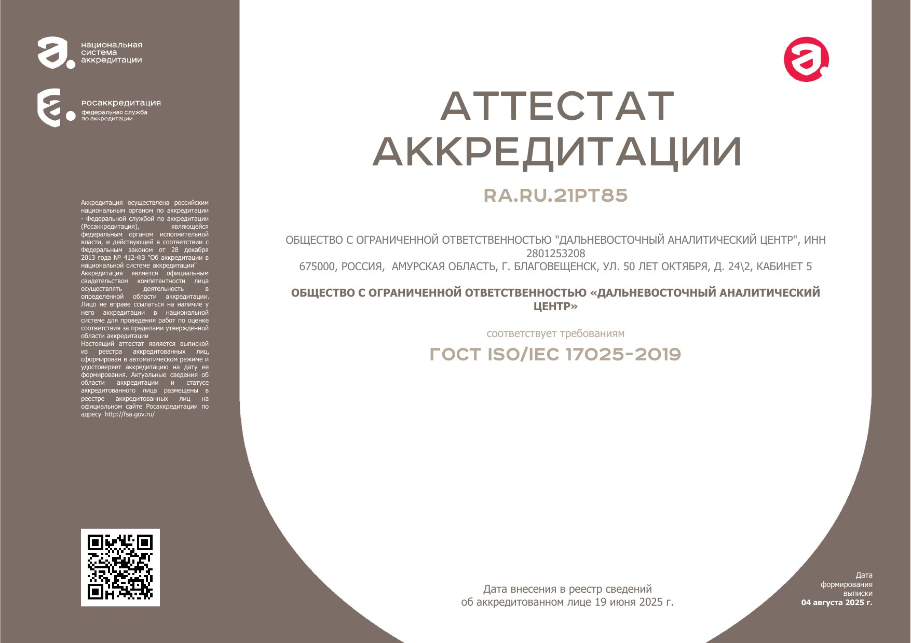

Лабораторно-инструментальные измерения физических факторов, исследования химического и микробиологического состава среды — от выбора земельного участка до ввода объекта в эксплуатацию и регулярного производственного контроля.
Рассчитать стоимостьРаботаем с организациями любого масштаба — от небольших клиник до крупных девелоперов.
Полный цикл измерений и исследований на базе собственной лаборатории.
Лабораторное качество по цене ниже рынка — в среднем на 20%.
Полная область аккредитации (91 лист) — по запросу. Для медицинских организаций — отдельный прайс-лист.
| Фактор | Что измеряем | Диапазон / охват |
|---|---|---|
| Шум | уровни звукового давления, эквивалентные и максимальные уровни, октавный анализ | по СанПиН / ГОСТ 23337 |
| Инфразвук | общий и октавные полосы частот | 29,6–151,5 дБ |
| Вибрация | общая и локальная | по СанПиН 1.2.3685 |
| Микроклимат | температура, влажность, скорость движения воздуха | −40…+70 °C · 3–98 % · 0,05–20 м/с |
| Освещение | искусственное, естественное (КЕО), наружное; пульсация, ослеплённость, яркость | по ГОСТ 33393, СП 52.13330 |
| ЭМИ | поля 50 Гц; 0,01–0,03 / 0,03–300 / 300–40000 МГц; плотность потока энергии | до 95 000 МГц — включая 5G |
| УФ-излучение | ультрафиолет производственных источников | по Р 50.2.053 |
| Химический фактор | NO₂, CO, SO₂, NH₃, O₃, H₂S, HCl, кислоты, формальдегид, фенол, ацетон, углеводороды и др. | газоанализатор ГАНК-4 |
| Аэрозоли | взвешенные вещества, пыль (в т.ч. 20–70 % SiO₂), сварочный аэрозоль | по МУ 5309-90 |
| Радиация | МАЭД гамма-излучения, плотность потока и ЭРОА радона | 0,1–1000 мкЗв/ч · 1–10⁶ Бк/м³ |
| Вентиляция | скорость воздуха, расчёт эффективности работы вентиляции | с выдачей заключения |
| Бактериология | воздух, смывы, стерильность, контроль стерилизаторов, биоплёнки | для медорганизаций |
Аккредитация в национальной системе — Федеральная служба по аккредитации (Росаккредитация), ФЗ-412.

Санитарно-эпидемиологическая экспертиза проекта (ООО «ДВЭБ», орган инспекции RA.RU.710669) + лабораторные замеры для ЗОЗ и ЗОС (ООО «ДВАЦ») — всё, что нужно для ввода жилого дома в эксплуатацию, от одной команды, без потерь времени между этапами.
Бесплатно рассчитаем стоимость по перечню точек и факторов — в течение 1 дня.
направьте перечень объектов и точек — по почте или телефону
подготовим коммерческое предложение под вашу задачу
проведём измерения с учётом ваших сроков и графика работы объекта
оформим и выдадим аккредитованные протоколы и заключения
Бесплатный расчёт стоимости по перечню точек и факторов. Ответим в течение рабочего дня.